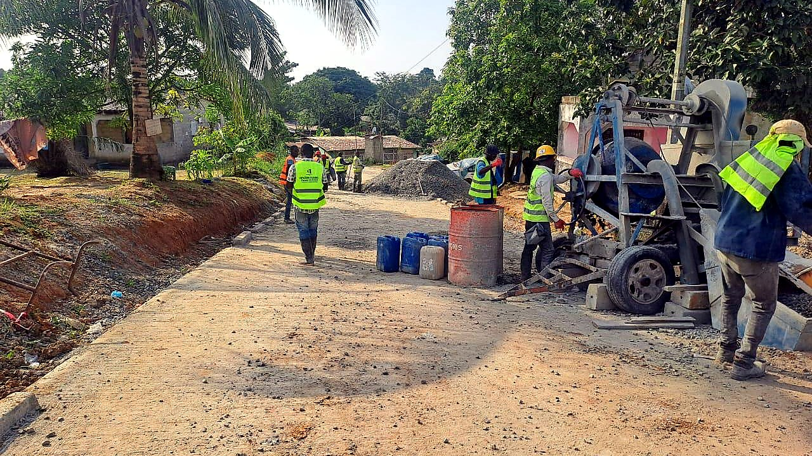
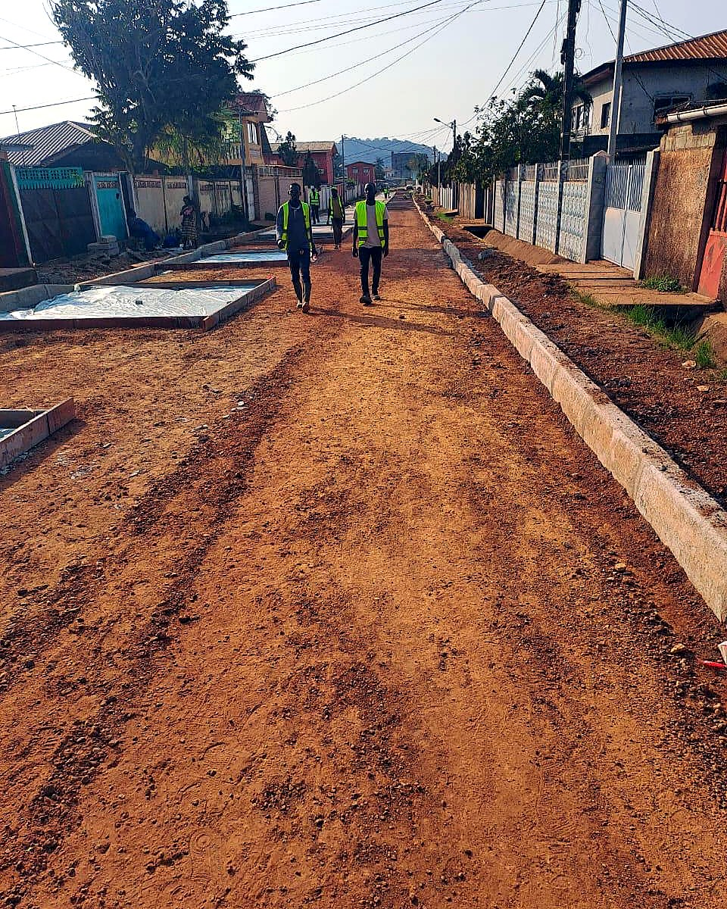
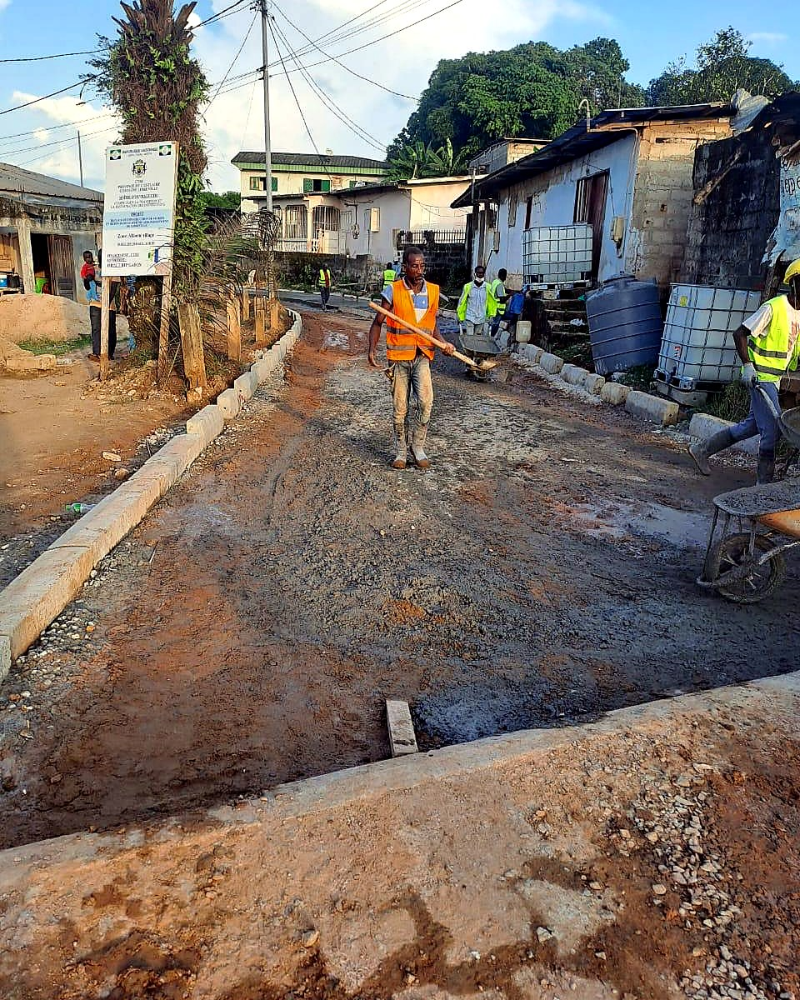

Impact BTP a livré les travaux avec méthode. Les accès sont plus praticables et l'équipe a gardé un bon suivi du chantier.

Une expertise locale au service du développement national
Impact BTP Gabon Plus est née d'un constat simple : les infrastructures routières secondaires du Gabon méritent la même exigence que les grands chantiers nationaux. Fondée par des professionnels passionnés du BTP, notre entreprise s'est donné pour mission de construire des voiries fiables, durables et adaptées au terrain gabonais.
Chaque route que nous livrons est le fruit d'une connaissance intime du sol, du climat équatorial et des besoins réels des populations. Nous ne nous contentons pas de poser du bitume ; nous concevons des solutions qui traversent les saisons, supportent les pluies lourdes et servent les communautés année après année.
50+Projets livrés
120 kmDe voiries
9Provinces couvertes

Notre service
Des interventions claires, reliées aux pages dédiées
L'accueil reste court. Les détails techniques, demandes de devis et réalisations restent faciles à consulter.

01Voiries secondaires
Créer des voies fiables pour les quartiers, communes et zones d'activité.

02Pistes rurales
Relier les villages, sécuriser les accès et faciliter les déplacements locaux.
 03
03
Terrassement
Préparer les plateformes, stabiliser les sols et poser des bases solides.

04Drainage
Organiser l'écoulement des eaux pour protéger les routes et les accès.
Témoignages
Ils nous font confiance sur le terrain
Des retours sobres et locaux, alignés avec l'activité de l'entreprise.
La réhabilitation de la piste a facilité les déplacements et les livraisons. Les échanges avec l'équipe ont été clairs.
Le terrassement et le drainage réalisés sont propres. On voit que la préparation du terrain a été prise au sérieux.